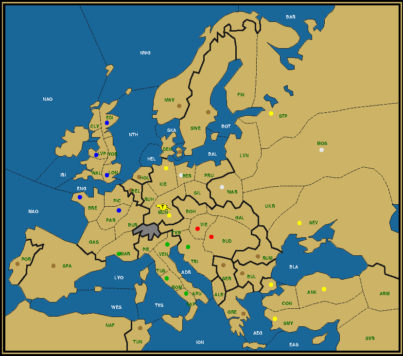
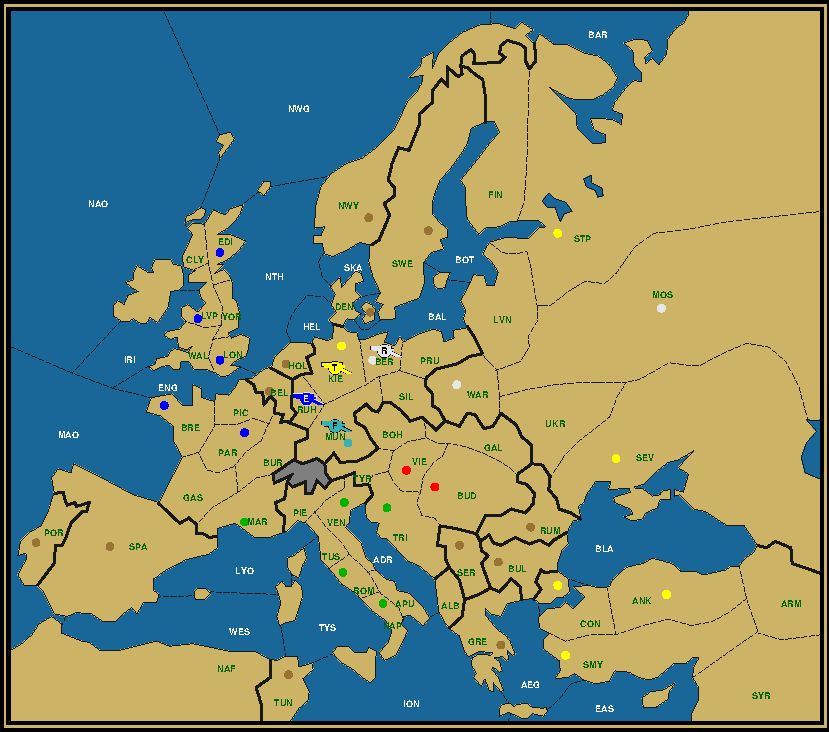
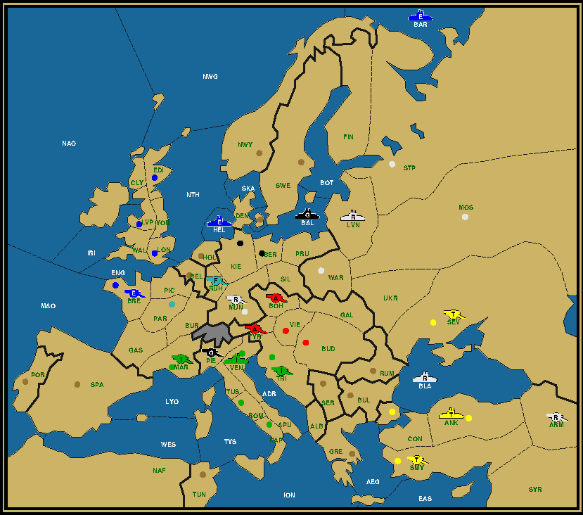
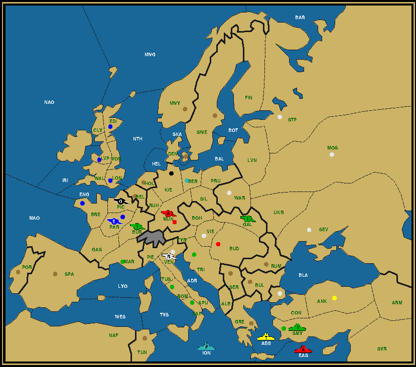
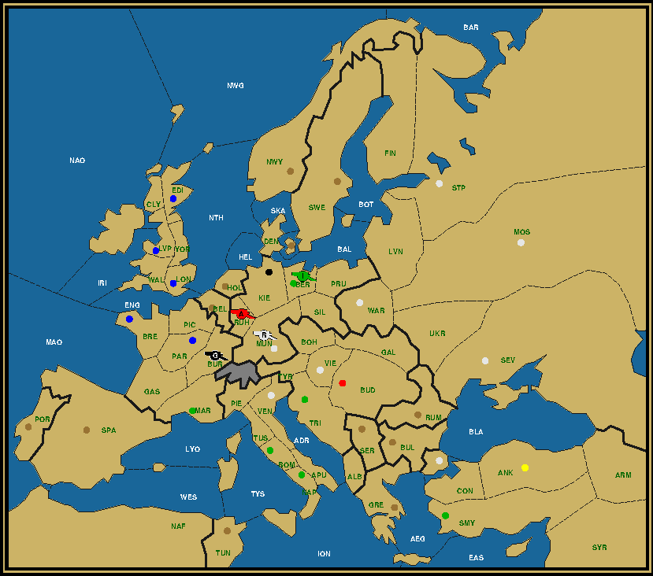

Last Man Standing is a puzzle on the Diplomacy board, whereby the whole board gets reduced to a single unit. This unit must reach its final destination in a mere four game years, without any power capturing any neutral centers and with all powers still possessing at least one unit at the end of the second year. Your goal is to reconstruct the complete game history from the map given. For more details, read the LMS Roll Call. Let's turn east to the great plains of Russia. Or rather of the former Polish-Lithuanian Commonwealth, an enormous country which at its peak stretched all the way from the Baltic to the Black Sea, encompassing modern day Poland, the Ukraine (minus the Crimea, Ottoman at the time), the Baltic States and some other territories. But Empires come to an end and in the case of the Commonwealth that end was pretty radical. Over the course of three partitions between 1772 and 1795 its former territory was completely split up between Russia, Prussia (the forebear of Germany) and Austria. Not even a romp state was left. This was more than a century before WWI, at the end of which each would obtain a short-lived independence as separate states. Mission: The DelugeWith such a history you would say the Poles and Lithuanians have enough enemies to hold a grudge against. And yet when you ask them who they blame for their downfall, it's none of the big three, nor Ottoman Turkey, nor even the fickle Ukrainians who regularly revolted as if it were a national sport. It's Sweden, a country with a relatively small population. In the 17th century the time of the Vikings was long past, but the Swedes had a mighty army and they owned land south of the Baltic Sea. From there they campaigned against the Poles, the Russians and the Danes. In one of these campaigns, in 1655, they captured half the country, including the old capital of Krakow and the new capital Warsaw. Then before withdrawing they started to loot in such earnest that not a single silver platter was left. Historians called it "the Deluge". The Commonwealth's economy never fully recovered and with its coffers empty it gradually lost its status as a Great Power. Army Constantinople to Warsaw, After Winter 1904 Austria (0/3) Bud Tri Vie England (0/5) Ber Edi Kie Lon Lvp France (0/5) Bre Mar Mun Par Ven Italy (0/2) Nap Rom Turkey (1/7) A War / Ank Con Mos Sev Smy Stp War Not the Swedes, but the Turks triumph in Poland's capital, Warsaw. The yellow color and the placement of the Russian home centers is reminiscent of the yellow cross in the Swedish flag. Moreover one of the Swedish kings found refuge in Constantinople after a disastrous campaign in the Ukraine. So there's more than one bond between the two people. The remarkable fact about this solution is that at the end of 1902, at the halfway mark, there are just 7 units left, all armies, all of course of a different color. Your task is to find out where each of them is located. To make sure that we all come up with the same solution, I will give you some hints, all concerning the nearby Austrian capital. You can choose to read them as a riddle or straight up. I prefer the riddle....Give it to me as straight as black coffee....Don't need any of these hints....Mission: The PlagueRoll back a few hundred years to the year 1347 and the city of Kaffa, a Crimean port controlled by Genoa, but under attack by the Mongols who were suffering from a grueling disease. The Mongols, in an early form of biological warfare, catapulted dead bodies into the city, infecting the population within the walls. The Genovese then set sail to flee the city, carrying in their hulls the rats, furry hosts to the fleas that in turn transmitted the pest parasite everywhere they made landfall. From Sicily it spread to the rest of Italy and on to the other Mediterranean countries and then further along the Atlantic, North Sea and Baltic coasts back to Russia, making almost a full circle. On the way it killed nearly half the existing European population. But the Plague was not constricted to Europe, having previously ravaged China, India and the Muslim countries. In just under a decade it accounted for a sharp decline in the world population, from which it would take two centuries to recover. Italian to Sevastopol, After Winter 1904 Austria (0/5) Bud Mos Stp Tri Vie England (0/4) Edi Kie Lon Lvp France (0/6) Bre Mar Mun Par Smy Ven Germany (0/1) Ber Italy (1/6) ? Sev / Ank Con Nap Rom Sev War On this map we're making a smaller circle in the reverse direction, from Italy to the Crimea and the port city of Sevastopol (to the west of Kaffa, as Kaffa was close to the entrance of the Sea of Azov). Both Warsaw and Ankara are Italian, obscuring the direction from which the surviving Italian came. Did it go by sea or by land? Is it an army or a fleet? By changing the color of just a single center it becomes possible to change the identity (but not the color) and reverse the direction from which the survivor comes. Which center is that and what color does it need to change to? The answer to the previous paragraph should give you the answer here and vice versa. Debriefing: Oktoberfest — Army Smyrna to Munich

Army Smyrna to Munich, After Winter 1904 This is a pretty fun puzzle. As an experiment I published this on a couple of Diplomacy forums, encouraging visitors to find a solution through a collective effort. Although the reaction was underwhelming, the problem statement was kind of innovative, so let me repeat it here. We'll pick in right after the introduction of an LMS puzzle in general.
This type of questioning actually leads to a very specific approach to solving the puzzle. Namely, can we answer the questions without necessarily reproducing the entire solution? Let's see how far we can get on the first question. Germany and Turkey are already on the Munich occupation list, in first and last position. That necessarily means that the power owning Munich in 1903 is a sniper country other than Germany, because whoever owns Munich in 1903 must be eliminated in 1904 by losing its last center: Munich. The only candidate is France. Moreover France must capture Munich in 1903, as ownership changes every year. Therefore France has an army in Munich at the end of 1903, which at the same time gives us the second unit for the second question. The situation in 1902 is much harder to tell, so let's turn to the start instead and see if we can determine who owns Munich at the end of 1901. It immediately becomes clear how central Munich is, because no less than five foreign armies from four different nations can occupy Munich in the first year. Two of these are French, which we know won't capture the city until 1903. But that still leaves three to consider: the Italian army Venice, Austrian army Vienna and Russian army Warsaw. Russia seems poised to take Berlin and Italy Marseilles, so that leaves Austria, right? Well, wrong. And to understand why, let's return to 1903 and the battle that occurs in the final year. With a French sniper in Munich and a Turkish raider in Kiel and assuming two other not yet identified units (why there can't be just one, I'll explain later), where do we go from here? The French army can of course not stay in Munich. It needs to move out and make room for a raider moving in from behind. On the way out it needs to dislodge a second raider, supported by the remaining third raider. Turkey is either the first or third raider. If it's the first one it now needs to support the French sniper towards the first raider. If it's the third one it moves itself to Munich supported by the French sniper to dislodge the first raider there. In either case France must end the turn on a space without a supply center. This space is the location of either the first or second raider at the end of 1903. Moreover each of the raiders needs to be in a space neighboring Munich in this very tight dance. As it's preferable that as many sniper centers are captured in 1903 as possible, so as to allow for the maximum number of snipers in that year, it follows that the best configuration is to have a unit in Berlin. Since Berlin won't change hands in the last year, that unit is going to be Russian. We can also posit now that Berlin will be captured by Russia in 1903. Therefore there's no need to capture it in 1901. Is that Russian unit in Berlin in 1903 an army or a fleet? That depends. In the first scenario, where the French raider moves twice, it could first dislodge the Russian unit of whichever type in Berlin. For this to happen, the fourth unit needs to be in Silesia. In the second scenario France must move immediately to a non-supply center space, which can only be Ruhr, while Russia moves into Munich and therefore necessarily is an army. The answer to the second question has now been reduced to the following options: a Turkish army in Kiel, a French army in Munich, a Russian army or fleet in Berlin, and an army of unknown nationality (neither French nor German, nor Turkish for that matter, because it can't dislodge its own countryman) in Silesia or Ruhr. How do we know now who captured Munich in 1901? Berlin is not a likely first target for Russia. But Russia needs an extra center, because the standard sweep operation in Turkey, where Russia employs two units to remove two Turkish units before disbanding, requires Russia to lose two centers in 1902. One of these is St. Petersburg, but the other must be a non-home center, given that Warsaw and Moscow remain Russian and Sevastopol gets captured in 1901. This could be either a German or an Austrian center. Observe now that Italy captures two centers, Marseilles and Trieste, most probably in 1901. Austria loses a center, which is a good way to get rid of the fleet, but only if it captures no centers itself. This makes Russia the prime candidate to capture Munich. Sure, Austria could capture Munich and Russia Vienna to keep Austria at two centers. But that would force Austria to recapture Vienna, which is quite wasteful and unproductive. That leaves three powers for the 1902 capture, Austria, Italy and England. The last one however only has one army and that army is needed to capture Paris, which it can't do in 1901 (too far out of reach), nor in 1903 given how tight the final dance is. So England is out. The key to discern between the other two is the Italian fleet Naples. Whereas usually this fleet disbands when Venice gets captured in the first year, this time Italy grows by two centers. There's no use in sending the fleet around the Atlantic. Instead let's move it as close as possible to the final destination, Munich, in the shortest amount of time. Right, to Venice, which it can reach already in the Fall of 1901. In order to keep Venice Italian it's necessary that the dislodgement happens in Spring 1902, not in Fall. But we can do even better with a second dislodgement. Note that Italian army Rome has captured Trieste in 1901. In Spring 1902 an Austrian army dislodges the fleet with support from a French or German army in Piedmont, while army Rome moves to Tyrolia, where the same Austrian army dislodges it in Fall. That's two green birds caught and a red bird of prey in Tyrolia in Fall 1902. Since a red army in Munich at the same time would complicate later operations, it's clear that an Italian army would be the best option. As it happens army Venice, which had captured Marseilles in 1901, can move to Munich and secure an Italian presence after 1902. Answer to the first question: 1. Germany, 2. Russia, 3. Italy, 4. France, 5. Turkey. To complete the second question, we need to know the fate of the English army after entering Paris in 1902. With what we know about the position at the end of 1903, either it moves to Ruhr or it gets dislodged on the way, presumably by a French or German sniper attacking Burgundy. Now, observe that France loses all its home centers in the first two years, Brest and Paris to England, Marseilles to Italy. But it only captures Munich at the end of 1903. How does it sustain itself in 1903? For that it needs to own a center that gets captured during that year, which means either Kiel or Berlin. That means in turn that of the two sniper centers captured that year, only one results in a Winter disbandment, as the other merely sustains the remaining sniper. Which is that second sniper that gets disbanded in Winter 1903? Obviously it must be the German fleet Kiel, for how else will the Turkish army reach Kiel in a single year from St. Petersburg if not with a convoy through the Baltic Sea? As such we can be assured that there's no other sniper that could attack Burgundy in Fall 1903, proving that the English army survives and ends up in Ruhr. The Ruhr solution requires a Russian army in Berlin, so as to move it to Munich, and so we can answer the second question in full. The surviving units at the end of 1903 are: 1. Turkish army Kiel, 2. French army Munich, 3. Russian army Berlin, 4. English army Ruhr.

Army Smyrna to Munich, After Winter 1903 If you were wondering, this dearth of snipers is one major reason why it would be hard to reduce the board to just three units going into the final year. But this is in no way conclusive, so if you think it possible, go ahead and explore the alternatives. Even with both questions answered there are still a number of things that might be unclear, like the fate of the second Austrian army, the English and Russian fleets up North, or which German home center the French army captures first. Most of these events take place in 1902, so a good way to frame this is to consider what the map might look like at the end of 1902. We already know that there's an Italian army in Munich, an Austrian in Tyrolia, an English in Paris and a Turkish in St. Petersburg. Furthermore a French army is in either Kiel or Berlin, while the German fleet is in or near the Baltic Sea, ready to convoy the Turkish army during the course of 1903. And then there's Russia. After losing St. Petersburg and Munich for the purpose of disbanding its two units around the Black Sea, it must still have two more units in play because it still owns Moscow and Warsaw. Neither is on a supply center other than perhaps the two home centers just mentioned. The fleet is probably in the vicinity of the Baltic, while the army is near Berlin, which it must capture in 1903. Altogether that amounts to eight units of seven different countries. As such we've already fulfilled the rainbow condition of having at least one unit of each nation still on the board at the halfway point. The remaining units? We'll just throw them under the bus. Fleet Edinburgh travels to St. Petersburg as per normal procedure, where it gets dislodged by the Turkish army with support from either the German or Russian fleet. Fleet London can go to Kiel, where the French army attacks it with support from the other fleet, as both attacks occur in the Fall of 1902. As such we now can ascertain that the French army is in Kiel. To set up the Russian fleet for a quick takeout the next Spring, the best location is Livonia, so that the German fleet in the Baltic can support the Turkish army in there, before convoying it to Kiel. As for the second Austrian army, after the Russian army pulls out of Munich, the Austrian moves in and gets crushed by the Italian army moving towards Munich with help from the Russian. The ideal location for the latter is clearly Silesia, from where it can immediately move into Berlin and assist any action in Munich. Astoundingly we have now reasoned our way through the whole solution, apparently demonstrating that there's only one possible path. This needs to be taken with a grain of salt, but it's still impressive how a single extra condition (namely that Munich changes hands every turn) can thus apparently restrict the myriad of possible solutions to just this one. Quite likely, dear reader, I've lost you somewhere on the way, so let's get rid of all this text and illustrate the complete solution with a season-by-season rundown in pictures.

Army Smyrna to Munich, After Winter 1901 Click to view the complete history in a separate window Season: 1901. Russia is the first to arrive in Munich for the Oktoberfest. It spikes its beer with a shot of vodka. Army Smyrna to Munich, After Winter 1902 Click to view the complete history in a separate window Season: 1902. Italy crosses the Alps, bringing along a few bottles of wine to loosen the mood of the local Mädchen. Army Smyrna to Munich, After Winter 1903 Click to view the complete history in a separate window Season: 1903. When France joins the festivities, champagne corks fly all over the Festivalgelände. Army Smyrna to Munich, After Winter 1904 Click to view the complete history in a separate window Season: 1904. Even Turkey gets high, not on bira, but on rakı. The evening starts with belly dancing, but ends with everything off the table for some classic tabletop dancing. Prost! Debriefing: Kieler Woche — Russian Army to KielRussian Army to Kiel, After Winter 1904 Don't worry, we'll keep it short this time. The focus of this puzzle is the trip that the Russian survivor takes through five countries and various seas. Since raiders have a preponderance at leaving a trail by the centers they take, let's examine the centers captured by Russia. These are Constantinople, Kiel, Munich, Venice and Vienna. The Warsaw army could travel to Vienna in Austria, then Venice in Italy, then through France to end up in Germany, which would constitute five countries when including the starting country, Russia. The problem here is that Marseilles is not Russian. Moreover at no point did it cross a sea. A more likely course is for army Moscow to cross over to Turkish Constantinople, then a convoy to Italian Venice, moving on through Austria to get to German Munich before rounding off in Kiel. Given the time frame a diversion towards Vienna is not possible, as that would require five years to complete. The move through Austria is thus simply a short hop through Tyrolia. Five countries, two convoys, with only England and France left out. Charming, but not very helpful to solve this puzzle. Let's study the map in more detail. As in the previous puzzle France has been divided between Italy and England. Kiel and Munich end up with the same owner, which is Russia this time, while Italy took Berlin. Curiously Italy took a center off of each of its neighbors, mostly in tandem with Russia. As such both Austria and Turkey have only one home center left. But what does this tell us about the time frame needed to reach those centers? Like Berlin Smyrna cannot be captured before 1902. Which means that Italy at that point still has a unit in that theater that needs to be removed in 1903. For that we need two snipers on a culling mission. France can send fleet Brest to the Ionian Sea, but Germany would be hard pressed to deliver any troops for a Turkish expedition. The furthest an army could travel in the first two years is to Sevastopol, but a center this far removed from the goal can't be recaptured, effectively limiting the army to the Ukraine. The next year it could only reach Armenia, unable to aid the French fleet in any attack. We need a more local presence, which can be either Austria or Turkey. The problem is that they will retain a center until the end and therefore cannot completely be eliminated. In order to disband the unit they provide, they need not only to lose a center in 1903, but also keep a second unit alive into 1904 to account for the uncaptured home center. Since that unit cannot itself take a center, the conclusion is that there must be 4 units left after 1903, one of which (either Austrian or Turkish) occupies a space without a supply center (such as Ruhr), two of which are on supply centers (an Italian in Berlin, a Russian in Munich), and finally one sniper (either German or French) either in Kiel or likewise on a non-supply center space. The captured supply centers are used to remove the culling units and therefore must have previously been owned by these powers. One of these was thus French and, given the proximity to the German home centers, the other was most probably Austrian. Moreover, since we need to have all powers still present after 1902, the identity of the last remaining sniper cannot be other than German. There are still a few more riddles to solve, such as the destinations of the English fleets or the order in which Austria and France capture and lose centers, but these are not so tough to crack. The attentive reader might already have discovered a resemblance with one of the earlier puzzles. Indeed, Crackland, published in Operation Berlin and debriefed in Operation Moscow, the puzzle accredited to Graeme Ackland, served as a model. The choices there can be quite faithfully applied here. Let's discover them. Army Moscow to Kiel, After Winter 1901 Click to view the complete history in a separate window Season: 1901. Army Moscow gets off to a good start in the race, reaching Constantinople by way of the Black Sea.

Army Moscow to Kiel, After Winter 1902 Click to view the complete history in a separate window Season: 1902. A daring crossing of the Mediterranean Sea lands him at the entrance of the Piazzo San Marco in Venice, where he sails in at high tide.

Army Moscow to Kiel, After Winter 1903 Click to view the complete history in a separate window Season: 1903. To beat the competition the team elects to tow their boat over the Tyrolian Alps to Lake Constance for the last stretch over the Rhine. This gives them such a lead that they can happily spend a day in Munich, drinking the local beverage. Army Moscow to Kiel, After Winter 1904 Click to view the complete history in a separate window Season: 1904. The field suddenly gets crowded, but with a few risky steering maneuvers left and right their boat manages to cross the finish line first, while the competition is forced to retire.
|